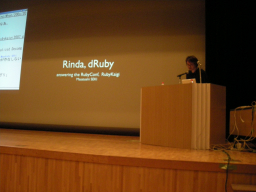

Rinda: Answering the RubyConf and RubyKaigi （関 将俊）
- スピーカー
- 関 将俊 - druby.org
- プロフィール
- プログラマ。幸福の王子本こと「dRubyによる分散・Webプログラミング」は今ならまだ初版が買えます。
- 講演時間
- 17：00〜17：30
- 講演者による資料
- http://www.druby.org/RK07.pdf
開始前のスライド笑えた。
第4回とちぎRubyの勉強会
6/23 西那須野公民館
基調講演：arton
豪華レギュラー
重要なことを先に
今日は個人的な言い訳をします。で始まりました。
dRuby本
- '05夏リリース
- まだかえます
buy now!!!
私について
- Agileとか
- やっとRuby
Product
- ERB
- dRuby
- Rinda
ユーザー数
- ERBがほとんど
- ego-searchではdRubyが
作者の愛はdRubyなのに報われない愛
- 愛の反対は無関心
- ERBは愛していないわけではないけど
今日はRinda
- いくつかの発表についていいわけします
- 言い訳駆動
去年の発表から
dRuby, Again
去年の発表そのままですｗ
dRubyのやること
- メッセージングを拡張
- オブジェクトの交換
プロセスを超えるとはの説明など
実験
飛ばされたー＞＜
そのほかスライドを飛ばしてとばして
オブジェクトの交換について
- 参照渡すかとか自動的に判定してやる
- dumpable, can't dump を自動的に判別しているから知らないうちにイテレータとか動いている
- Threadは参照渡し
- 値渡しはコピー
- コピー渡しなので破壊型のメソッドを呼んでも、そのままという例
dRubyを何に使うの？
- 配置と寿命
- オブジェクトはプロセスに在る
- 住まいが異なる＝寿命が異なる
寿命といえば永続化
- 永遠の永続化
- 比較的な短い永続化
Rinda
Linda
並列処理の糊言語 タプルとタプルスペース
Lindaの協調
- out
- inとrd
- 参加者はタプルスペースだけを知っている
かっこいい並列処理
Rinda
- RubyによるLindaの実装
- dRubyを意識してくれる
- タプルをArrayで表現
writeとtakeの例
- 待ち合わせ
- takeを先にすると、writeされるまで待ち合わせる
Answering
- Tupleの設計はプロトコルの設計
Tupleで表現するもの
- RPCの要求とその返信
テンプレート
- Tupleをパターンで指定
- read,take
- ===で比較
RPCなTuple
| メッセージ | 識別子 | 具/データ |
- 値で指定
- ワイルドカードはまずない
| :snapshot | 12345 | "http://foo/bar",320,240 |
| :snapshot | nil | nil, nil, nil |
| :snapshot_done | 12345 | "img_320_240_12345.jpg" |
| :snapshot_done | 12345 | nil |
O(N)
- メッセージだけで探す
- 要求がたまってるとき、すぐマッチ
- まあまあO(1)
不公平な検索
- 事前にメッセージごとに分類
- 先頭の要素がSymbolのばあいのみ
- StringやIntegerは===の扱いがむずかしい
tuple[0]はシンボルにしておくと効率がよい
Rinda遅いんですけど
さっきロビーで(ry
考えた
さっきの状態で生き返るTupleSpace
- 永続化
- タプルの内部表現の状態を外部に記録
- PTupleSpace
- 永続版TupleSpace
TupleStore
- Tupleの情報をメモしておく
- ログファイルのTupleStoreLog
- HashのTupleStoreSimple
- 書くだけ
- 落ちたときにログから生き返る
- 再起動の通知は
- Ringが使えるかも
- TupleStoreの配置は
- dRubyで好きなところに
不揮発性のオブジェクトID
- 不揮発な参照
- object_idはそのプロセスだけで有効
- 再起動時に困る
ログのIDを用いた特別な参照を作る
２００４年から開発が止まってる
変えたよ！
まとめ
関心を持ってくれたみなさまに感謝
それから
たまにはERBの言い訳をしたい
- なぜ行に分割をするのか
- メソッド化
質疑応答
ごめんなさい。最初の二つの質疑を落としました。
- Q
- 仕事でつかってます。ptuplespadeメーリングサーバーに使ってほしい
- A
- 使えると思うのでそのまま使ってください
全体的に早いペースの発表だったのでログもついていけませんでした。ごめんなさい。
(ロガー：よう)


Keyword(s):
References:[RubyKaigi2007速報ログ]